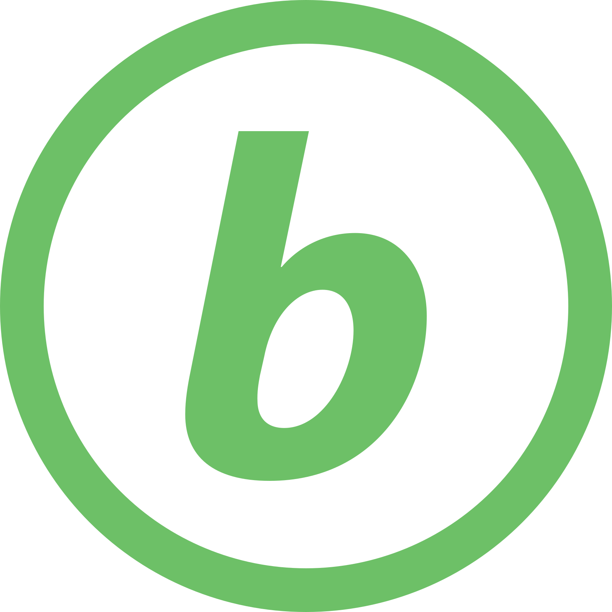
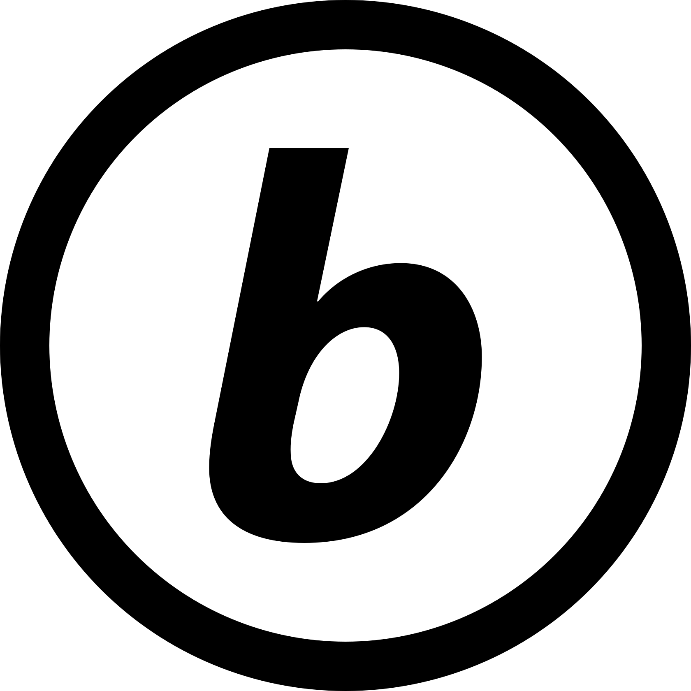
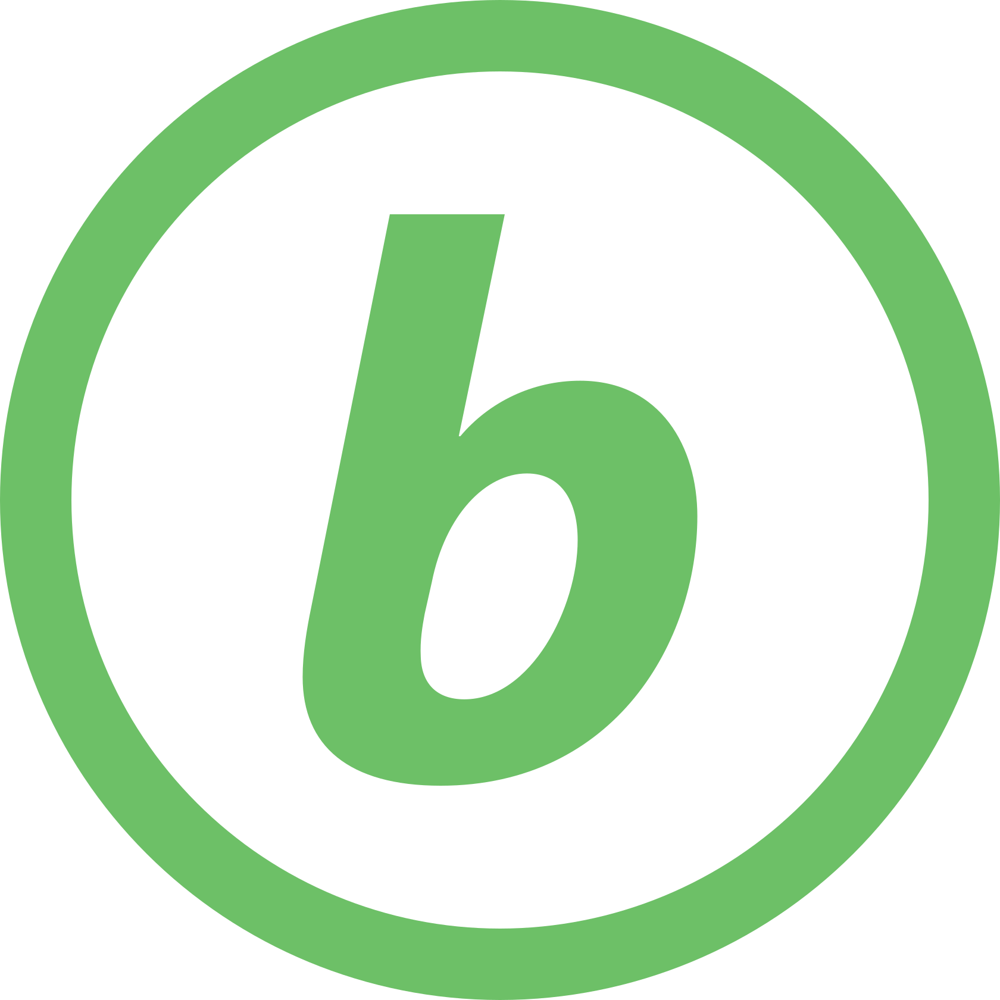
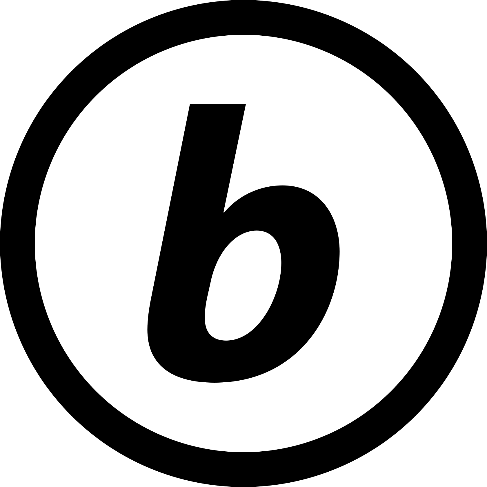
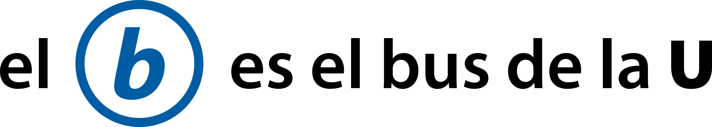

Elementos del sistema de señalética
Para una comunicación unificada, esta propuesta utiliza varios elementos comunes a todo el sistema de información, que facilitan la identificación por parte de las personas usuarias.
A continuación hay una descripción de los colores y tipografía, el símbolo del sistema, los lemas (eslogan) que identifican la propuesta y el nombre del servicio.
Colores y tipografía
Todos los colores de los elementos están basados en la paleta de colores del Manual de Identidad Visual de la Universidad de Costa Rica, revisión 3.1 del 2015.
| Nombre | HEX | RGB | Muestra |
|---|---|---|---|
| Celeste UCR | #00C0F3 | 0, 192, 243 | |
| Azul UCR | #005DA4 | 0, 93, 164 | |
| Verde UCR | #6DC067 | 109, 192, 103 | |
| Amarillo UCR | #FFE06A | 255, 224, 106 | |
| Naranja 3 UCR | #F37021 | 243, 112, 33 |
La propuesta utiliza la familia tipográfica Myriad Pro, un estilo sans serif (palo seco) humanista.
Símbolo del sistema
La mayoría de sistemas de transporte público alrededor del mundo utilizan un símbolo para identificar el servicio en toda su comunicación y en sus vehículos, infraestructura y demás.
Existen cientos de ejemplos pero aquí presentamos cuatro como referencia.
-
Underground (Londres)

Icónico diseño conocido como the roundel y creado en 1915.
-
MBTA (Boston)

El sistema es conocido como the T, por su símbolo.
-
Metro de Santiago (Chile)
Los rombos del símbolo representan vialidad, buses y metro.
-
Metro de Porto (Portugal)

Diseño moderno con una m estilizada dentro de un círculo.
Con base en estas y otras referencias, proponemos un símbolo para el servicio de buses de la Universidad de Costa Rica.
El símbolo para el bus de la U es el b

{kind=link}
Características
Consiste en un círculo que engloba la letra b, como referencia a la palabra bus.
- Utiliza la tipografía Myriad Pro, específicamente la letra b en negrita (bold) cursiva (italic).
- Utiliza el color Azul UCR, pero existen versiones en otros colores.

 



- Admite versiones con un marco cuadrado de color.


- Tiene las siguientes proporciones y área de respeto.

Compatibilidad con otros elementos gráficos de la UCR
"El b" no utiliza la base de los logotipos de unidades académicas u otras instancias de la UCR, pues su utilización es de naturaleza distinta. Sin embargo, mantiene conformidad con el manual de identidad visual en cuanto a colores y tipografía, respeta normas de señalización vial y sigue referencias de buenas prácticas de de diseño de sistemas de transporte público alrededor del mundo.
Lemas
Un lema o eslogan es una "una frase corta impactante o memorable utilizada en publicidad" New Oxford American Dictionary.
Proponemos dos lemas.

Con esta frase buscamos posicionar a el b como el símbolo del servicio de bus interno. Su referencia es clara y directa: "el (símbolo) b es (la representación del servicio de) el bus de la U". Hace también un guiño a la simetría de "el b" con "la U" y la tendencia a acortar las palabras.

Con esta frase buscamos fomentar una asociación de la Universidad de Costa Rica con el transporte público. La UCR participa activamente por medio de la investigación, docencia y acción social en la promoción del transporte público como motor de desarrollo socioeconómico en el país.
Posiblemente también es una referencia cómica a la frase "con v de vaca o con b de burro", utilizada para desambiguación de la v y la b al escribir. Ahora es: con b de bus.
Nombre del servicio
Estos servicios de transporte público son comúnmente conocidos como "el bus interno de la UCR" o "los buses externos".
Asignar un nombre especial es una forma de crear un vínculo con las personas usuarias. Aunque posiblemente "bus interno" o "bus externo" seguirán siendo los nombres ordinarios, proponemos un nombre especial. Esto es inspirado en otros casos similares como el del servicio de buses internos de la UNAM en México, llamado PumaBus, en alusión a su mascota.
El nombre propuesto para el sistema es la combinación de las palabras bus y UCR en el port-manteau bUCR, estilizado como:

y pronunciado bus-ce-erre o be-u-ce-erre.
Dónde utilizar este nombre
El nombre bUCR puede ser utilizado en redes sociales, sitio web y otros medios, pero no es recomendado en la señalización, donde debe existir un lenguaje más neutral, ajeno a nombres arbitrarios y desconocidos para una parte de la población.